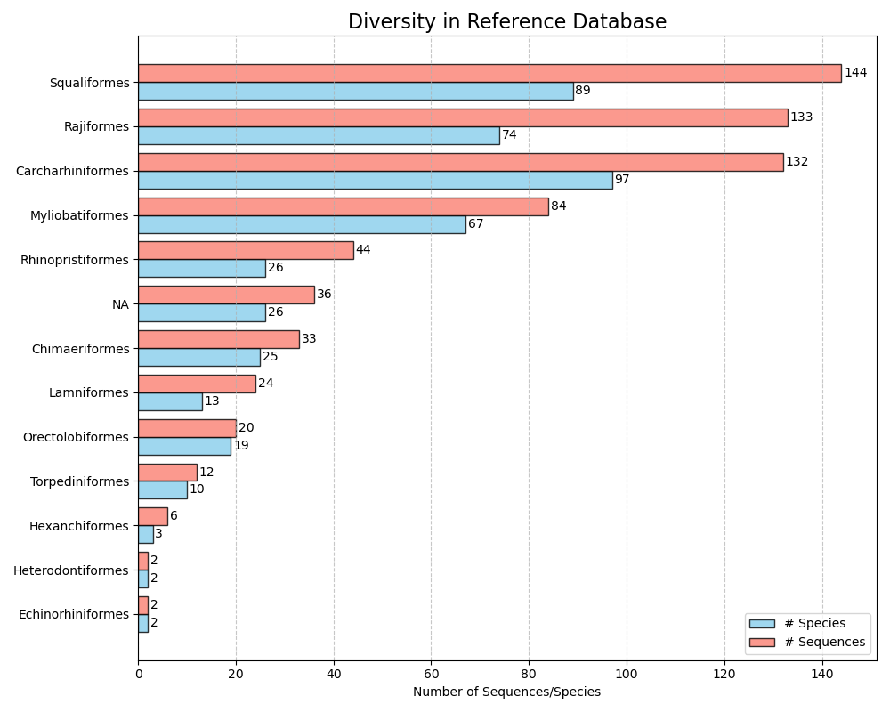
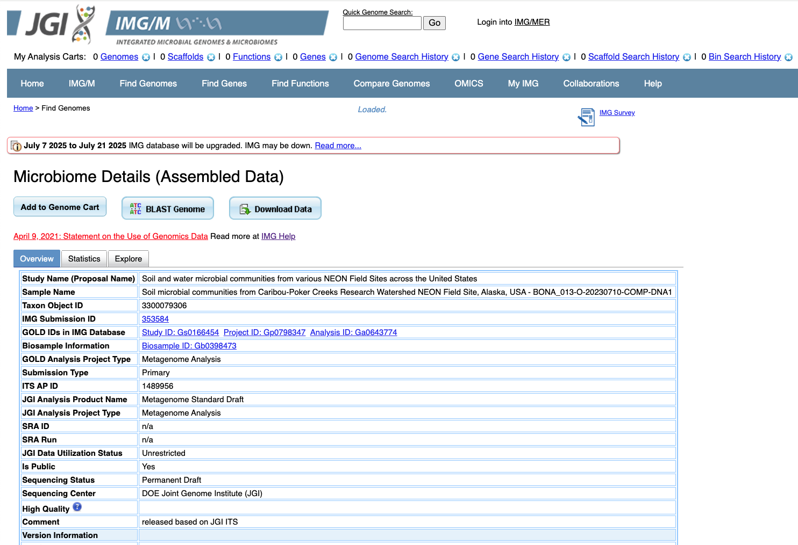

Major Projects
Crabs
I am a co-developer on the Python program Crabs. This program creates and curates reference databases from downloaded sequence data, including NCBI, EMBL, and curated databases such as UNITE. The reference databases from Crabs can be used to prepare reference databases for amplicon sequencing work. It features both insilico PCR and alignment-based methods to find target sequences in online databases. There are also some summary figures that can be generated to evaluate diversity of targets and primers. I also created a Docker image for this program (quay.io/swordfish/crabs).

phyloNEON
I have created an R package, phyloNEON, to help researchers access and use NEON genetic data. A database included in the package contains all NEON metagenome samples that have been analyzed through the JGI pipeline with extensive metadata to assist in searching. I have written functions that help users search this database and access taxonomic and functional genomic data for each sample.
For the processed amplicon sequence data (see analyses), phyloNEON also includes functions to convert downloaded NEON metabarcoding data to the phyloseq package format.
This package is being continually developed, with plans to include tools to help researchers access and utilize all NEON genetic data. For some tools they have utility for non-NEON genetic data.
